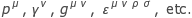
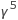
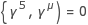
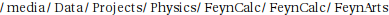

Short introduction
FeynCalc is a Mathematica package for algebraic calculations in high energy physics. It provides tools for Lorentz structure manipulations, Dirac algebra manipulations, color factor calculations, Feynman rule derivation, Feynman loop integral calculations (e.g. Passarino-Veltman reduction) and noncommutative algebra calculations, as well as various tabulations of Feynman parameter integrals, Mellin , convolutions, lagrangians and Feynman rules. Also, translation facilities are provided to change the FeynCalc syntax to and from FORM syntax and to generate FORTRAN code.
Some functions for input of objects like  (abbreviations in parentheses) are:
GA (Dirac matrix), GS (Dirac slash), FV (4-vector), LC (Levi-Civita tensor), MT (metric tensor), Spinor, SUNDelta, SUNFDelta, SUNF, SP (scalar product)
Some functions for manipulations are:
Contract, Tr, DiracSimplify, DiracTrick, Calc, Convolute, FeynRule, FeynCalc2FORM, Integrate2, PaVeReduce, SimplifyPolyLog, SUNSimplify, Isolate, Collect2, OneLoopSimplify, Series2, ApartFF
Some functions for Feyman loop integral manipulations:
ApartFF, FCLoopIsolate, OneLoop, OneLoopSimplify, TID, ToPaVe, PaVeReduce
For more detailed information on FeynCalc functions, use the help system or look at the examples in (evaluate the following command)
Not all functions are equally well documented in this notebook. Some are very special ones (e.g. for tools for 2-loop QCD diagrams originating in twist-2 OPE), some are still experimental.
The scheme used in OneLoop is the naive one, i.e.,  in 4 and D dimensions. See also ToLarin.
The metric used is the one from Bjorken and Drell (+---).
† Mellin transforms (e.g. all integrals - except 57,58 and 59, and correcting a minor misprint in 14) of Appendix 7 from hep-ph/9810241 are tabulated in Integrate2
Starting FeynCalc
If the directory "FeynCalc" has been put in the directory "Applications" in your Mathematica installation tree, which is (evaluate the following command)
you should be able to load FeynCalc via <<FeynCalc` from a Mathematica session with no
further ado. You can also put this line into your "init.m" file. This will cause automatic loading of FeynCalc on every Mathematica startup.
FeynCalc might suggest you to set the default output format type is to TraditionalForm, since this allows for nice typesetting of many FeynCalc objects. This can be done by clicking on the Cell menu, then go to the Default Output Format Type item and select TraditionalForm.
If you prefer StandardForm and don't want to be bothered, just uncomment the line
You might want to reverse this after quitting FeynCalc by clicking on the Cell menu, then go to the Default Output Format Type item and select StandardForm, or by evaluating
Extra subpackages
The directory "FeynCalc" contains various files and subdirectories belonging to third-party packages which are not necessary to run 'standard' FeynCalc calculations and which do not use the autoloading conventions of FeynCalc. These packages are not initialized by default when starting FeynCalc. Loading them can be switched on and off by setting appropiate variables to False or True before loading FeynCalc.
TARCER
TARCER is a Mathematica program for the reduction of two-loop propagator integrals. It was developed by R. Mertig and R. Scharf and published in hep-ph/9801383.
TARCER is distributed with FeynCalc. To have FeynCalc load TARCER, evaluate
before loading FeynCalc. You can also put the last input line into your "FCConfig.m" file.
PHI
PHI is a Mathematica package for manipulating covariant derivatives etc. of effective theories like Chiral Perturbation Theory developed by F. J. Orellana. Moreover it provides an alternative way of creating coupling definitions for FeynArts. This is convenient if one needs to generate a large number of Feynman rules from different lagrangians. PHI is distributed with FeynCalc.
To have FeynCalc load PHI, evaluate
before loading FeynCalc You can also put this line into your "FCConfig.m" file.
More information is available at http://www.feyncalc.org/phi/.
FeynArts
FeynArts is a Mathematica package for generating Feynman diagrams and the corresponding amplitudes. The original FeynArts was created by J. Küblbeck, M. Böhm and A. Denner in 1990 (INSPIRE). Since 1998 it is developed further by Thomas Hahn (hep-ph/0012260). For more information about FeynArts please visit the official site. The manual is available here.
FeynArts is not a part of FeynCalc but its output can be used by FeynCalc to evaluate the generated amplitudes. Unfortunately, many FeynArts functions have the same name as the FeynCalc functions which makes Mathematica produce lots of warnings when loading both packages in the same session.
One possible workaround is to first generate the amplitudes with FeynArts, then save them in a notebook, quit Mathematica, open the notebook and only then load FeynCalc and evaluate the amplitudes. However, this method is rather inconvenient if one wants to play with different options and see how this affects the final result.
The preferred way of using FeynArts with FeynCalc is to patch FeynArts, such that all corresponding FeynArts functions are renamed and no shadowing occurs. In this case one can use FeynArts and FeynCalc in the same Mathematica session without any unwanted interference effects.
For this you need to download the latest version of FeynArts and extract the tarball to the FeynArts directory inside FeynCalc, which (evaluate the following command) is
| In[13]:= |
| Out[13]= |  |
Then you need to restart Mathematica and enter
| In[16]:= |
before loading FeynCalc. A dialog asking if you want to patch FeynArts will appear. Hit OK. Wait until the patching process finishes. Then restart Mathematica again and load FeynCalc with
| In[18]:= |
each time you want to use FeynArts with FeynCalc.
Example Calculations
A lot of examples can be found in (evaluate the following command)
| In[24]:= |
| Out[24]= |